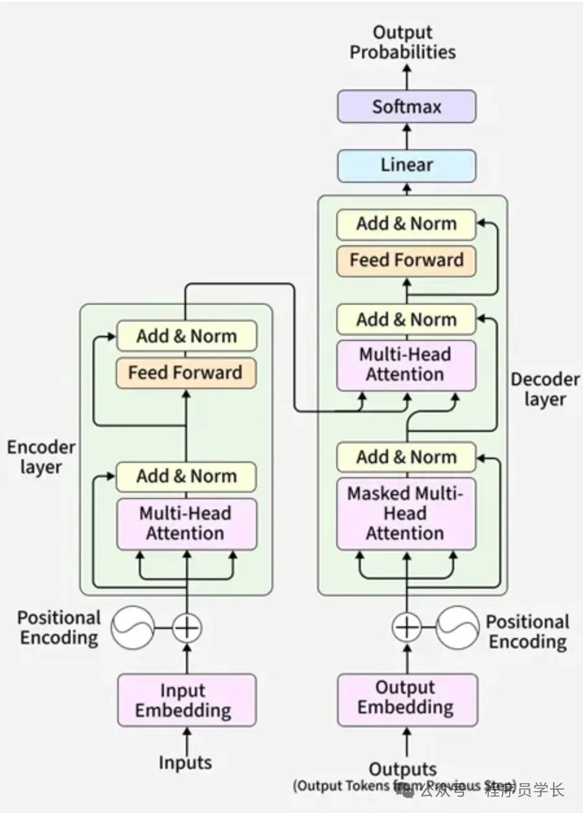
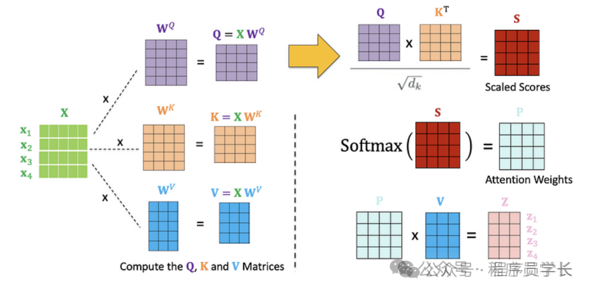
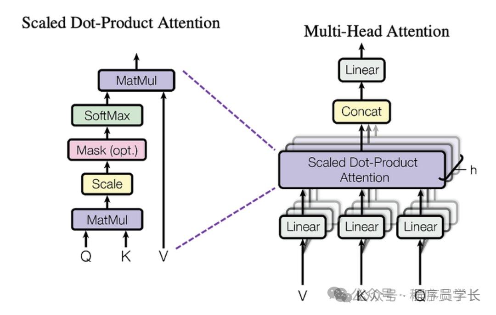
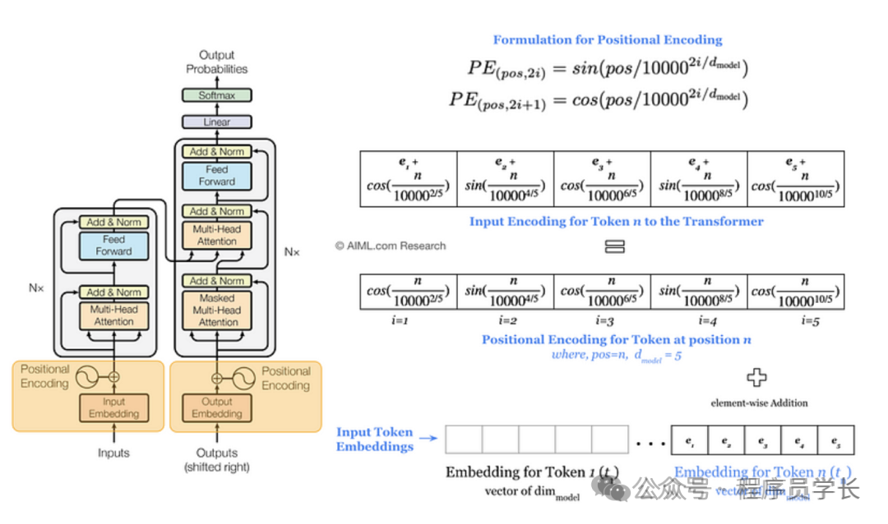
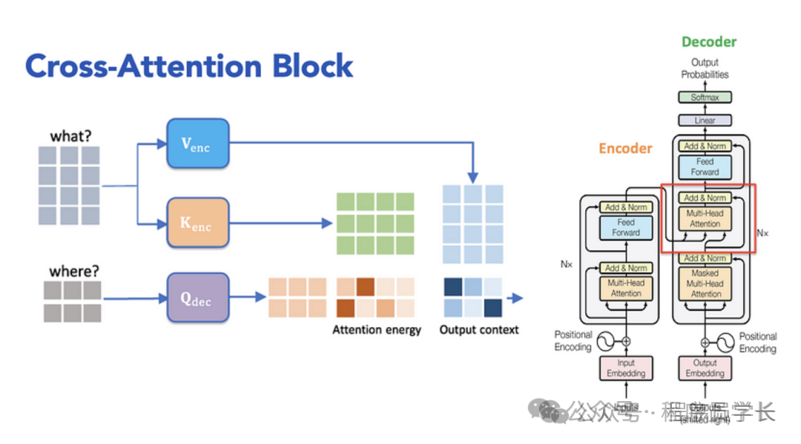

终于把 Transformer 算法搞懂了！！
大家好，我是小寒
今天给大家分享一个超强的算法模型，Transformer
Transformer 是由 Google 在 2017 年的论文《Attention Is All You Need》中提出的一种深度学习架构，它彻底改变了自然语言处理（NLP）领域，并成为当前大语言模型（如 GPT、Claude、Gemini）的的底层架构。
与之前的 RNN 和 LSTM 不同，Transformer 摒弃了递归结构，完全基于自注意力机制（Self-Attention）来捕捉序列中的全局依赖关系，使得模型能够并行处理序列数据，并捕捉长距离的依赖关系。

核心架构：编码器-解码器
Transformer 遵循典型的 Encoder-Decoder（编码器-解码器）结构。
-
Encoder（编码器）
负责将输入序列映射为高维的上下文表示。
它由 个相同的层堆叠而成，每层包含两个子层：多头自注意力机制（Multi-Head Self-Attention）和前馈神经网络（Feed-Forward Network）。
-
Decoder（解码器）
根据 Encoder 的输出和当前已生成的序列，自回归地生成目标序列。
同样由
 个相同的层堆叠而成，每层包括三个子层：掩码多头自注意力（Masked Multi-Head Self-Attention）、编码器-解码器交叉注意力（Encoder-Decoder Attention）和前馈神经网络。
个相同的层堆叠而成，每层包括三个子层：掩码多头自注意力（Masked Multi-Head Self-Attention）、编码器-解码器交叉注意力（Encoder-Decoder Attention）和前馈神经网络。
核心数学原理
1.自注意力机制
这是 Transformer 的灵魂。它允许模型在处理一个词时，通过关注句子中所有其他词来获取上下文信息。

计算过程
给定输入矩阵 ，我们通过线性变换得到三个向量：Query ( )**、**Key () 和 Value (
)**、**Key () 和 Value ( )。
)。
然后计算注意力分数
- **：计算词与词之间的相关性得分。
- **：缩放因子，除以
 是为了防止点积数值过大导致 Softmax 进入梯度饱和区，引起梯度消失。
是为了防止点积数值过大导致 Softmax 进入梯度饱和区，引起梯度消失。 - Softmax：进行归一化，使得注意力权重和为 1。
- 最后乘以
 ：根据权重加权求和，得到当前词的上下文表征。
：根据权重加权求和，得到当前词的上下文表征。
2.多头注意力机制
为了让模型从多个不同的子空间中学习信息，Transformer 采用多头注意力机制（例如，一个头关注语法关系，另一个关注指代关系）。

它将 分割成  个头，每个头独立执行注意力计算，最后将结果拼接并线性投影
个头，每个头独立执行注意力计算，最后将结果拼接并线性投影
其中
import torch
import torch.nn as nn
import torch.nn.functional as F
import math
class MultiHeadAttention(nn.Module):
def __init__(self, d_model, num_heads):
super(MultiHeadAttention, self).__init__()
assert d_model % num_heads == 0, "d_model 必须能被 num_heads 整除"
self.d_model = d_model
self.num_heads = num_heads
self.d_k = d_model // num_heads # 每个头的维度
# 线性映射层：将输入映射为 Q, K, V
self.W_q = nn.Linear(d_model, d_model)
self.W_k = nn.Linear(d_model, d_model)
self.W_v = nn.Linear(d_model, d_model)
# 最后的输出投影层
self.W_o = nn.Linear(d_model, d_model)
def scaled_dot_product_attention(self, Q, K, V, mask=None):
# Q, K, V shape: (batch_size, num_heads, seq_len, d_k)
attn_scores = torch.matmul(Q, K.transpose(-2, -1)) / math.sqrt(self.d_k)
if mask is not None:
# 填充 mask：将需要屏蔽的位置设为一个极小值，使其在 softmax 后趋近于 0
attn_scores = attn_scores.masked_fill(mask == 0, -1e9)
attn_probs = F.softmax(attn_scores, dim=-1)
output = torch.matmul(attn_probs, V)
return output, attn_probs
def forward(self, x, mask=None):
batch_size, seq_len, d_model = x.size()
# 1. 线性变换并分头
Q = self.W_q(x).view(batch_size, seq_len, self.num_heads, self.d_k).transpose(1, 2)
K = self.W_k(x).view(batch_size, seq_len, self.num_heads, self.d_k).transpose(1, 2)
V = self.W_v(x).view(batch_size, seq_len, self.num_heads, self.d_k).transpose(1, 2)
# 2. 计算多头注意力
attn_output, attn_probs = self.scaled_dot_product_attention(Q, K, V, mask)
# 3. 拼接（Concat）并将头维度合并回去
attn_output = attn_output.transpose(1, 2).contiguous().view(batch_size, seq_len, d_model)
# 4. 输出投影
return self.W_o(attn_output)
## 使用示例
d_model = 512
num_heads = 8
batch_size = 1
seq_len = 10
mha = MultiHeadAttention(d_model, num_heads)
input_tensor = torch.randn(batch_size, seq_len, d_model)
output = mha(input_tensor)
print(f"输入形状: {input_tensor.shape}")
print(f"输出形状: {output.shape}")
3.位置编码
由于 Transformer 没有递归或卷积结构，它无法感知序列的顺序。
为了引入位置信息，我们在词嵌入（Embedding）中加入位置编码
- 对于偶数位置 ：
- 对于奇数位置 ：
这种正弦/余弦函数编码允许模型通过相对距离轻松学习位置信息。

4.前馈神经网络
在注意力层之后，使用一个两层的 MLP 进行逐位置映射
5.残差连接与层归一化
每个子层后面都添加了残差连接和层归一化，以缓解深层网络中的梯度消失问题。
6.掩码多头自注意力
该组件位于 Decoder 的最底层。
它的核心目标是：在生成过程中，防止当前位置看到未来位置的信息，从而强制模型以自回归的方式逐步生成输出。
其计算过程与普通的自注意力一致，但在计算 Softmax 之前，增加了一个因果掩码。
其中  是一个下三角掩码矩阵
是一个下三角掩码矩阵
通过在 Softmax 之前加上这个下三角矩阵 ，当计算第  个词的注意力时，所有 （未来位置）的得分会被加上 ，经过 Softmax 后归一化为 0，从而确保模型在推理时严格遵循“因果性”。
个词的注意力时，所有 （未来位置）的得分会被加上 ，经过 Softmax 后归一化为 0，从而确保模型在推理时严格遵循“因果性”。
7.编码器-解码器交叉注意力
这是连接 Decoder 与 Encoder 的桥梁。它的作用是让 Decoder 在生成每一个 Token 时，都能够“回看” 原始输入序列（Encoder 的输出）。
其计算公式为：
其中
- ：来自 Decoder 的上一层输出。它代表“当前我正在关注生成任务的哪个部分”。
- 和 ：来自 Encoder 的最终输出。它们代表“原始输入序列中包含的丰富语义信息”。

Transformer 的关键优势
- 并行计算能力：RNN 必须按时间步递归计算，而 Transformer 可以对整个序列进行并行计算，大幅提升了训练效率。
- 长距离依赖捕捉：在 RNN 中，距离越远的词信息损失越严重；而 Transformer 中，任意两个词的路径长度均为 ，信息流动更加顺畅。